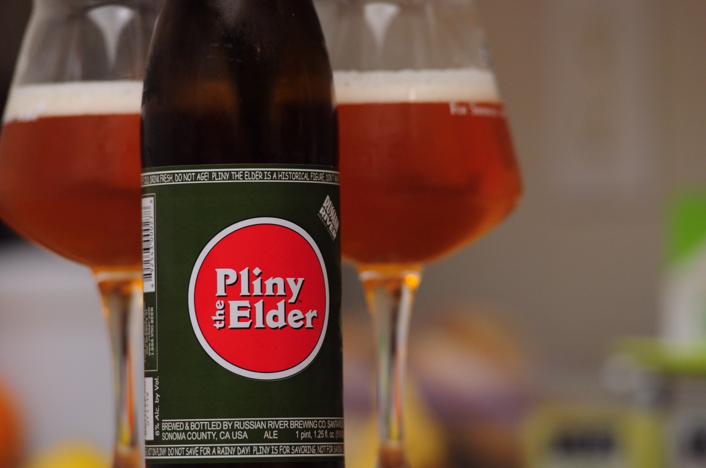

Better APIs
with Pliny
1) Open Pliny

2) Write API
3) It's better
Thank you
“
Why Services
software.gif

Teams grow
Coordination
Independent iteration
Beware Services
Not one DB
no transactions, joins, harder reporting
Deployment, Monitoring, etc
…
HTTP API Design Guide
- ETags, Accepts header, Status codes
- ISO8601
- Request-Id
- Minimize path nesting
- Range headers
Pliny
Extracted from Heroku API
Remove Small Decisions
Pliny Parts
- management and ops
- interactions
- growth
Examples (mostly) from 𝕋𝔼𝕃𝔼𝕏
Transferatu
Ruby
>> irb
Postgres
Sequel
Notification.eager_graph(:message=>:followup)
.where(user: @user)
.where("notifications.created_at > now() - '1 month'::interval")
.order(Sequel.desc(:created_at), Sequel.asc(:followup__created_at))
.all
SELECT ...
FROM notifications
LEFT OUTER JOIN messages AS message ON (message.id = notifications.message_id)
LEFT OUTER JOIN followups AS followup ON (followup.message_id = message.id)
WHERE ((notifications.user_id = 'aaaaaaaa-aaaa-aaaa-aaaa-aaaaaaaaaaaa')
AND (notifications.created_at > now() - '1 month'::interval))
ORDER BY created_at DESC, followup.created_at ASC
JSON schema
$ curl https://api.heroku.com/schema -H "Accept: application/vnd.heroku+json; version=3"
"app": {
"description": "An app represents the program that you would like to deploy and run on Heroku.",
...
"definitions": {
"name": {
"description": "unique name of app",
"example": "example",
"pattern": "^[a-z][a-z0-9-]{3,30}$",
"type": [
"string"
]
}
},
"links": [
{
"description": "Create a new app.",
"href": "/apps",
"method": "POST",
"rel": "create",
"schema": {
"properties": {
"name": {
"$ref": "#/definitions/app/definitions/name"
}
}
},
"title": "Create"
}
],
"properties": {
"name": {
"$ref": "#/definitions/app/definitions/name"
}
}
}
Generate clients
Tests and Validations
Serializers and Versioning
structure(:default) do |n|
m = n.message
{
id: n.id,
created_at: time_format(n.created_at),
title: m.title,
read: !!n.read_at,
body: m.body,
target: {
type: m.target_type,
id: m.target_id
},
followup: m.followup.map { |f| {
created_at: time_format(f.created_at),
body: f.body
} }
}
end
Mediators
interactors, managers, etc
Encapsulate interaction
- models just validation
- controller just auth and lookup
- ease testing, understanding
class Plexer < Mediators::Base
attr_accessor :user_finder, :message, :users_with_role
private :users_with_role=, :message=
def initialize(message:)
self.message = message
self.users_with_role = []
self.user_finder = Mediators::Messages::UserFinder.from_message(message)
end
def call
get_users
create_notifications
end
private
def get_users
self.users_with_role = user_finder.call
end
def create_notifications
users_with_role.map(&:user).uniq { |u| u.id }.each do |user|
Mediators::Notifications::Creator.run(message: message, user: user)
end
end
end